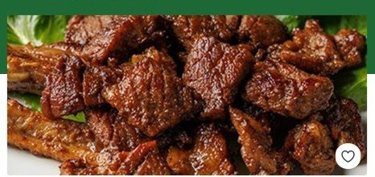

팔도감 전국팔도 제철먹거리
Performance Growth · 퍼포먼스 마케터 지원
산지직송을 넘어,
'건강하게 먹는 재미'를 판다
팔도감의 코어는 50대 여성. 그들이 원하는 건 '신선함'이 아니라 '건강하게, 즐겁게 먹는 법'입니다.
할인이 아니라 — 콘텐츠·커뮤니티·숏커머스로 '먹고 싶게' 만들어 구매전환율을 높이겠습니다.
🥗 건강하게 먹는 재미
📲 콘텐츠·숏 커머스
🔁 Test & Learn
이도형 ｜ Performance Marketer 지원 · 면접 발표용 ｜ 2026
The Problem · 할인의 함정
'할인으로 산 고객'은 CAC를 회수하기 전에 무너진다
중단
오늘회 — 75만 회원·170억 투자에도 현금흐름 붕괴로 서비스 종료(2022)
무흑자
정육각 — 수년 적자·회생절차. 매스 마케팅 축소 후 CRM으로 전환
적자
새벽배송 — 쿠폰 출혈 경쟁으로 대부분 적자. 흑자는 오아시스 정도
🩸객단가는 낮고 재구매는 빠른데, 쿠폰·할인으로 데려온 트래픽은 비싸고 약하다. 살아남은 곳의 공통 처방은 '할인 → 콘텐츠·CRM 리텐션' 전환이었다.
🌱팔도감은 설립 2년 만 흑자 — 출혈 대신 효율로 풀었다. 다음 한 수는 할인이 아니라 '먹고 싶게 만드는' 콘텐츠.
출처 · 오늘회: 이코노미스트·머니투데이 / 정육각: mstacc / 새벽배송: 매거진한경 / 팔도감 흑자: 플래텀·이코노믹데일리(2024.7)
The Signal · 광고 라이브러리가 보여주는 전장
컬리는 '할인 310건'을 쏜다 — 팔도감의 전장은 거기가 아니다
컬리 — Meta 광고 ~310건 활성
"50% 할인 쿠폰", "67%+1.2만원 추가할인", "72% OFF" — 할인율로 도배. 앱설치(OneLink)·DPA 자동노출.
팔도감 — Meta 광고 ~0건
"검색 기준과 일치하는 광고가 없습니다." 할인전을 비켜선 지금이 기회 — '먹고 싶게' 만드는 콘텐츠로 채울 빈자리.
📌경쟁은 '할인율'로 싸운다. 팔도감이 이길 길은 같은 싸움이 아니라 — '건강하게 먹는 재미'를 보여주는 콘텐츠·커뮤니티 커머스.
출처 · Meta 광고 라이브러리(facebook.com/ads/library, 대한민국, 2026.6 직접 조회) — '컬리' ~310건 / '그리팅' ~9건 / '팔도감' 0건.
The Gap · 신선을 팔지만, 고객은 건강을 검색한다
'산지직송'은 3040의 언어 — 코어 50대는 '건강'을 찾는다
'산지직송' 검색 = 3040
30~40대 중심 · 검색 하락세
'팔도감' 검색 = 50대
50대 압도 · 여성 83%
'50대 여성 음식' 검색 = 건강식단
AI 브리핑부터 "뼈·혈관 건강 영양소로 재정의", 관련질문은 "갱년기 증상 완화" — 그 자리를 건기식 광고가 사고 있다.
⚠️팔도감 상세페이지는 '얼마나 신선한가'만 말한다 — 그건 3040의 언어. 코어 50대 여성은 '얼마나 건강한가(갱년기·혈당)'를 검색한다. 메시지와 고객이 어긋나 있다.
출처 · 네이버 검색광고 키워드도구('산지직송'·'팔도감', 2026.5) · 네이버 검색 '50대 여성 음식'(2026.6 직접 캡처)
The Persona · 팔도감의 코어, 우리 엄마
62세, 혼자 사는 주방 — '먹는 일'이 결핍이 된 5가지
👩🦳
김영자 (가명) · 62세
자녀 출가 후 혼자 사는 주방.
건강은 챙겨야 하는데, 혼자 먹는 끼니는 점점 부실해진다.
팔도감 검색의 50%+ · 여성 83% = 바로 이 사람
🍚부실해진 끼니
"나 하나 먹자고…" 자식 출가 후 제대로 차려 먹지 않는다.
🗑️버리는 음식
혼자라 양 조절 실패 — 사놓고 상해서 버리는 게 다반사.
😮💨입맛 없음·지겨움
매일 하던 음식만. 새로운 걸 모르니 입맛도 흥미도 없다.
💬나눌 사람 부재
"어떻게 더 건강·맛있게 먹지?" 물어보고 고민 나눌 데가 없다.
💡5개의 공통분모 = "건강하게, 즐겁게, 누군가와 함께 먹고 싶다." 팔도감이 팔아야 할 건 식재료가 아니라 — 바로 이것.
The Proposal · 그래서, 리브랜딩
'산지직송 쇼핑몰'에서 →
'건강하게 먹는 재미'를 파는 커뮤니티 커머스로
할인으로 사게 만들지 않습니다. 오늘의집처럼 '건강 집밥' 콘텐츠를 쌓고, 그립처럼 숏커머스로 먹고 싶게 만들고, 구매 전 '이 재료가 내 몸에 무슨 역할인지'를 보여줍니다.
맛있게 먹는 법을 나누는 커뮤니티가 곧 구매전환(CVR) 엔진입니다.
📖 콘텐츠 커머스 (오늘의집)
📹 숏커머스 (그립)
🩺 구매 전 건강 가치
📦 할인 대신 소량배송
Benchmark · 검증된 두 모델을 합친다
오늘의집의 '콘텐츠 커머스' + 그립의 '숏커머스'
오늘의집 — 콘텐츠가 곧 쇼핑
'집들이' 콘텐츠 → 사진 속 제품을 태그 → 그 자리에서 구매. 보는 재미가 구매로 이어진다.
📹 그립 (grip.show)보면서 바로 사는 숏·라이브 커머스
진행자가 먹고·보여주는 영상 → 즉시 구매. '먹고 싶게' 만드는 커머스의 정석.
🌾 팔도감 = 둘의 결합건강 집밥 콘텐츠 × 산지 숏커머스
둘을 합쳐 '먹고 싶게' 만들고, 보는 그 자리에서 재료를 담게 한다. 할인이 아니라 콘텐츠가 전환을 만든다.
참고 · 오늘의집(ohou.se) 콘텐츠·커머스 통합 피드 · 그립(grip.show) 라이브·숏 커머스 — 2026.6 확인
The Move · 건강하게 먹는 재미, 이렇게 만든다
콘텐츠·숏커머스 + 구매 전 건강 가치 = 먹고 싶게
팔갱년기 엄마의 든든한 밥상@팔도감러버 · 산지 숏폼 12초 ▶

+성주 참외
+해남 들기름
🩺 혈당 부담 ↓ · 저GI 품종
"혈당 걱정되던 우리 엄마가 매일 아침 안심하고 드세요"
성주 참외저당 품종
해남 들기름불포화지방
국산 두부식물성 단백
🛒 이 식단 그대로 담기▶ 숏폼
1건강을 보이게 · 구매 전에 "이 재료가 갱년기·혈당에 무슨 역할"인지 라벨·성적표로. → 부실한 끼니를 '건강하게'
2먹는 재미를 나누게 · 집밥·식단 콘텐츠 커뮤니티(오늘의집형), 사진 속 재료 태그→구매. → 외로움·나눌 사람
3먹고 싶게 · 산지·집밥 숏커머스(그립형), 보면서 바로 담기. → 입맛 없음·지겨움
4혼자여도 사게 · 할인 대신 1인 소량배송, 버림 제로. → 버리는 음식
▲ 직접 그린 제안 화면 — 팔도감 콘텐츠·숏 커머스(오늘의집×그립 적용) · 우측은 페르소나 5페인 ↔ 해결 매핑
Activation · 어디에 무엇을 발행하나
새 메시지를 채널별 콘텐츠 + 퍼포먼스 액션으로
유튜브 쇼츠·릴스·틱톡 · 자사앱산지·집밥 숏커머스
"농부가 참외 쪼개는" 12초 산지 숏폼 + 그립형 라이브 → 바로 담기. 3초 훅·주3회 교체.
KPI · 시청완료율·신규 CPO ＜검증: 토스 숏폼 CPO −47%＞
자사 커뮤니티 · 인스타 · 블로그건강 집밥 콘텐츠(UGC)
'갱년기 엄마 밥상' 레시피·후기 + 재료 태그. 유저 식단 인증 챌린지로 콘텐츠를 양산.
KPI · 콘텐츠 경유 전환·저장·체류
네이버 · 구글 검색저경쟁 건강 키워드
"혈당 과일·갱년기 음식·저당" 검색광고 + SEO 콘텐츠로 '증상→음식' 깔때기 상단을 선점.
KPI · 검색 유입 CVR·키워드 단가
카카오 알림톡·비즈보드 · 밴드제철·건강 CRM
D+7 제철 알림 + 커뮤니티 글 추천으로 재방문. 4050 도달은 비즈보드·밴드로.
KPI · D7 재구매율·알림 전환
🎯공통 원칙 — 할인 카피가 아니라 '건강하게 먹는 재미' 콘텐츠를 채널마다 변주. 콘텐츠 하나가 광고 소재 × SEO 자산 × 커뮤니티 글로 동시에 쓰인다.
출처 · 토스애즈 인사이트(CPO −47%) · 토스/카카오/밴드 4050 채널 효율(토스애즈 오디언스·카카오비즈니스)
Test & Learn · 빠르게 시도, 빠르게 레슨런
'많이' 쓰지 않습니다 — '되는 콘텐츠에 단계적으로'
① 가설
콘텐츠 가설
건강 집밥·산지 숏폼을 효능·후기·레시피 앵글로 변주
→
② 테스트
주 단위 A/B
한 번에 하나씩 — 훅·썸네일·CTA 변수 통제
→
③ 측정
Airbridge
채널별 CPO·콘텐츠 경유 CVR. 라스트터치 한계는 증분 보정
→
④ 스케일
되면 +20%
목표 CPO·CVR·D7 검증 시 단계 증액
/
④ 킬
안 되면 즉시
미달 콘텐츠·지면은 빠르게 종료
📐판단 기준은 클릭이 아니라 콘텐츠 경유 CVR · 신규 CPO ÷ D7 재구매. LTV : CAC ≥ 3 세그먼트만 증액.
⚡속도가 곧 효율 — 큰 베팅 한 번보다 작게 여러 번 빠르게 배운다. 라포랩스 스택(Airbridge·Braze)과 정합.
※ 라포랩스 실제 마케팅 스택·자율 집행 운영과 정합 — AB180 라포랩스 인터뷰 기준
Next Step · 기대효과
할인이 아니라 '먹는 재미'로,
구매전환율을 높인다
팔도감을 '건강하게 먹는 재미'를 파는 콘텐츠·커뮤니티 커머스로 리브랜딩합니다.
콘텐츠 → 숏커머스 → 커뮤니티가 구매전환(CVR)을 끌어올리는 엔진 — 그리고 빠르게 시도하고 빠르게 배웁니다.
CVR ↑ 콘텐츠 경유 구매전환
재구매 ↑ 커뮤니티 락인
CAC ↓ 콘텐츠·오가닉
객단가 ↑ 건강 식단
팔도감 건강하게 먹는 재미 · 이도형